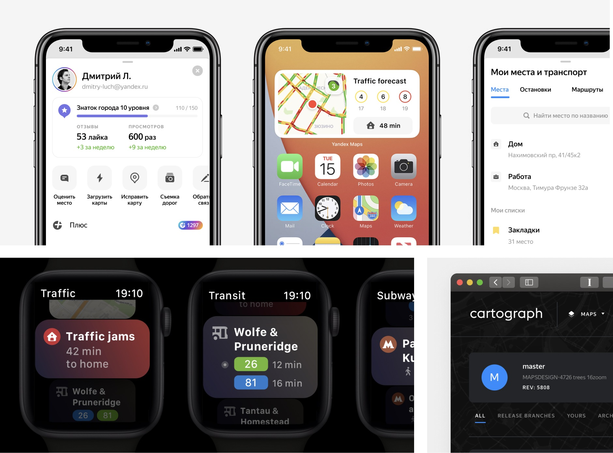
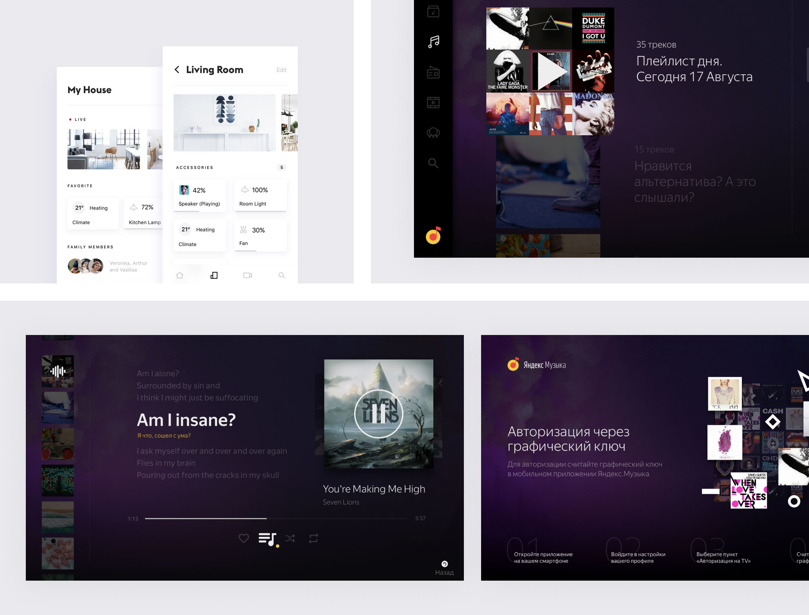
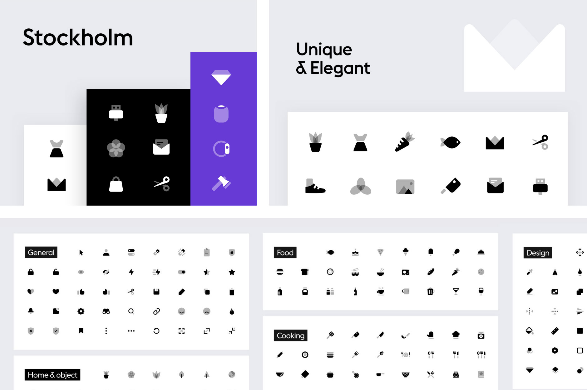
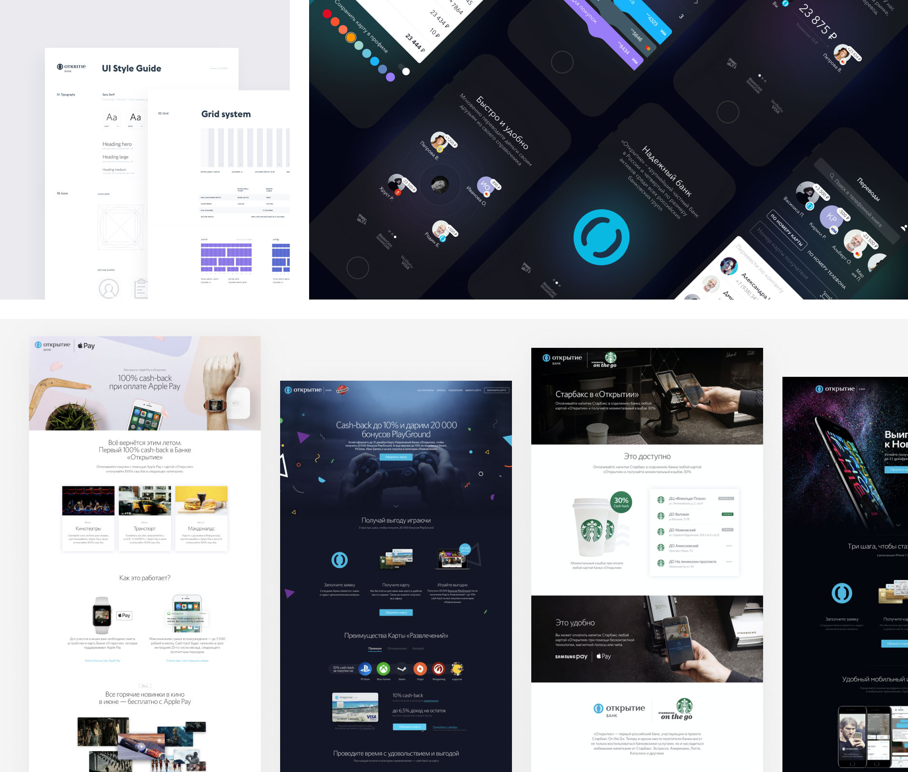
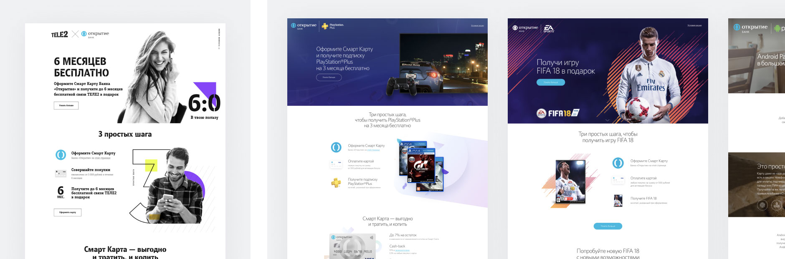
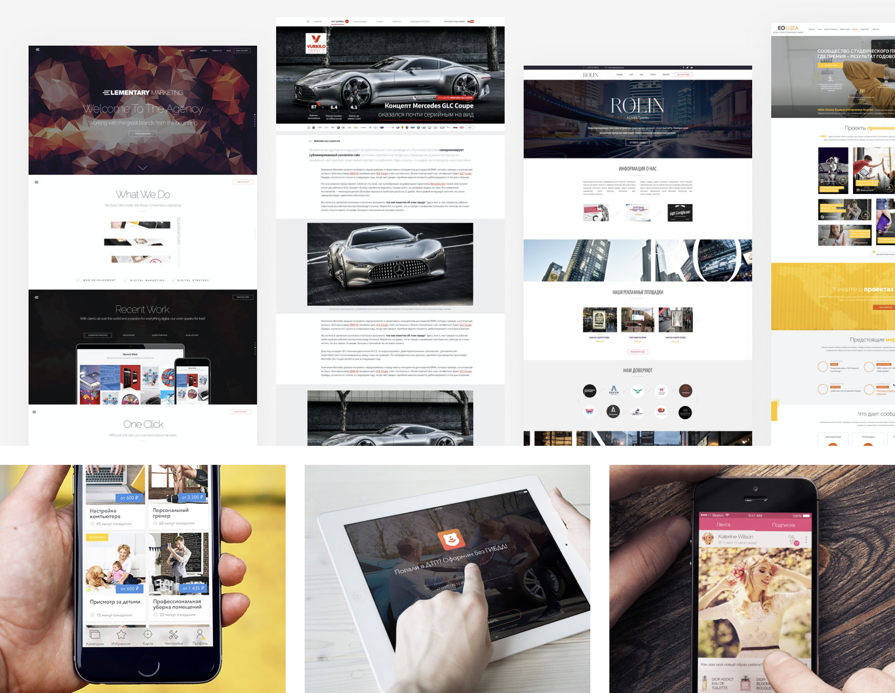
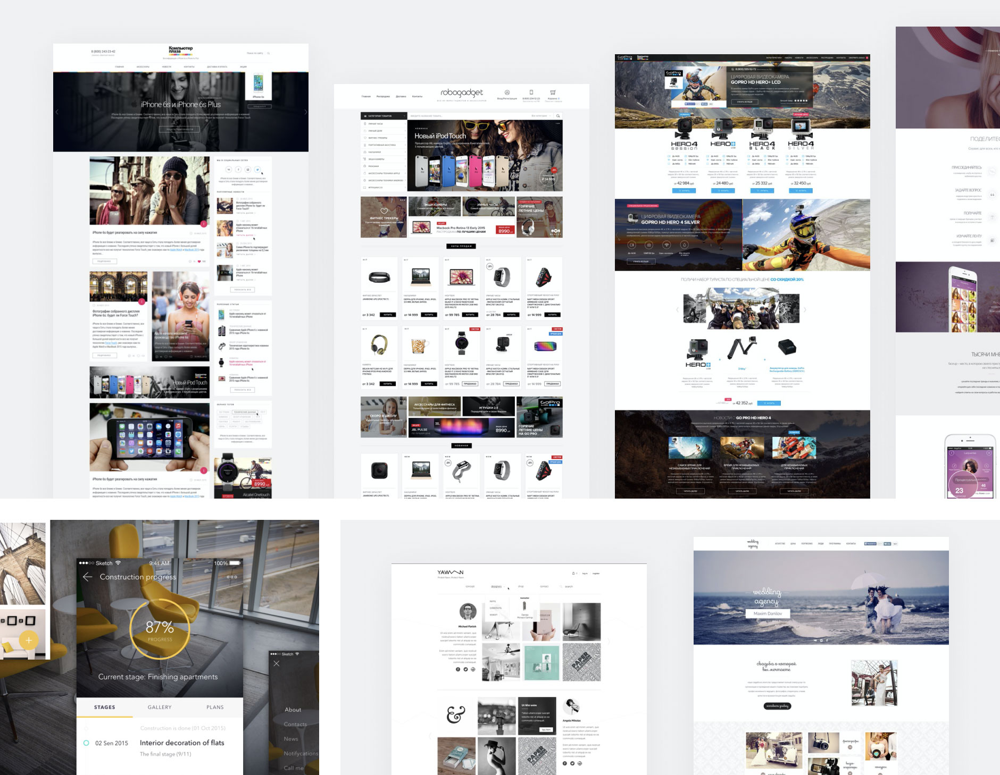
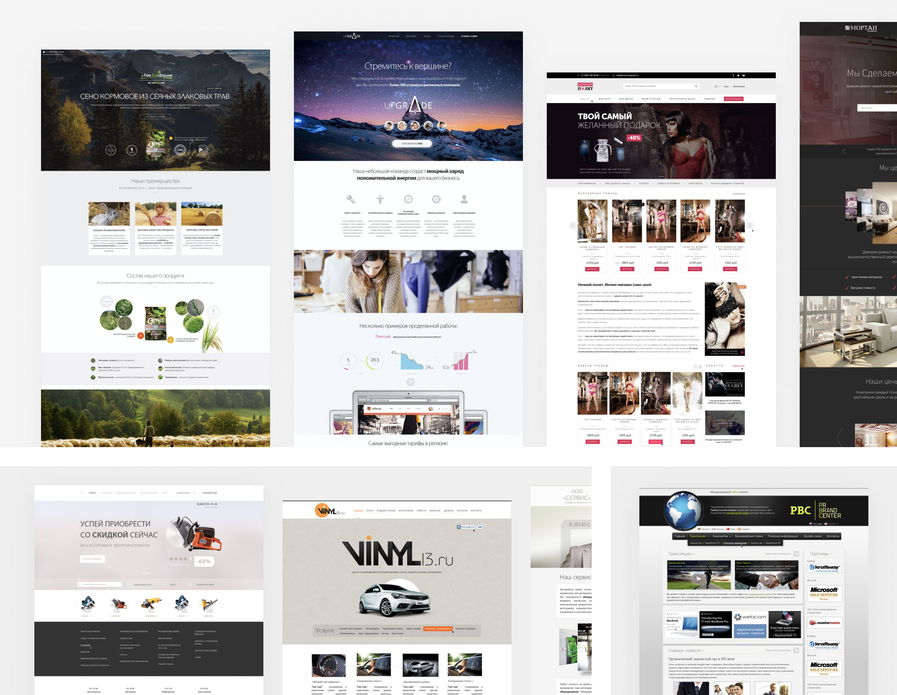

Work experience.Three words about my work: obvious, problem-solving, clean look.
Yandex Maps
Nov 2017 — present
I led a design system and team design library. Developed a Figma plugin, which allows generating dark/light themes in seconds. Also, I working on delivery styles and assets using the Figma API.
Working on the web app architecture and routes. Created a tool for creating maps. Designed a tool for creating and publishing ad campaigns in the Geo Yandex Apps. Worked on the Apple Watch App.
Projects: Team Design System, Web App architecture, Watch App, Map Style Editor Tool, Touch Yandex.Maps, Routes, Advertising tool for agencies
Yandex Product Design Campus
Jul 2017 - Sep 2017
The campus included a study of product design, market research with the best designers. I made a product from research to MVP with a team of developers. We were testing prototypes and solving user problems.
I learned how to launch products from scratch in big companies like Yandex. Increased my problem-solving and communication skills. I had the experience of how to creating apps for TV on the Android, Samsung, LG platforms.
Projects: Yandex.Music TV App, Smart Home App Concept (test assignment)
Stokholm Icon Set
Self project. Jun 2018
I created Stockholm is an icon set that consists of 640 high quality vector duotone icons. It is built on a 24 x 24 pixel-grid to ensure exact pixel fitting on screens.
Stockholm icon set is using by thousands of designers around the world. Icons sales at Creative Market and UI8. This is one of the most popular icon sets at the market.
Bank Otkritie
Jun 2016 — Nov 2017
I worked on design system including Grid, Colors, Font Styles, Icons Grid, Components. Worked together with developers to create React components from design system. Test prototypes, analyst users behaviors and solve UX problems.
I improved design process and communication with designers and developers. Interviewed 15+ designers for the product design role, including test task reviewing.
Projects: Bank Design System, Bank Website, Money Transfer App, Promo companies with big companies (Apple, Starbucks, Lukoil, Aeroflot, Sony, Samsung), LP and Branding concepts
 Voltmobi
Nov 2015 — Jun 2016
The main project of my work at the Voltmobi is the Yakitoriya app (the biggest sushi online ordering service in Moscow). I am designed the all-new Android application, from research and prototyping to high-quality animation and icons.
We increased orders in the new app up to 30%. I had experience working with all remote developers team.
Projects: Yakitoria App, Delivery Boy — app for Yakitoria couriers, DocDoc — doctor scheduling app (UX), The Petersburg Number — app to get connected to a random citizen of Saint-Petersburg

PR-Solution Agency
Aug 2014 — Nov 2015
I worked on mobile application design, responsive web sites, landing pages, user Interfaces, responsive e-mailing from customer briefs to high-quality pixel perfect design screens. Creating wireframes, clickable prototypes, animation.
Worked with a lot of industries like e-commerce, wedding business, events, hotel business, creative agencies, a flower business, blogging, car insurance.
 Old times
2010 — 2014
I started my design career in 2010. I worked in small agencies (Effisol, Upgrade, Makinvest) and freelancing. I worked on landing pages, websites, e-commerce websites, business card design.
